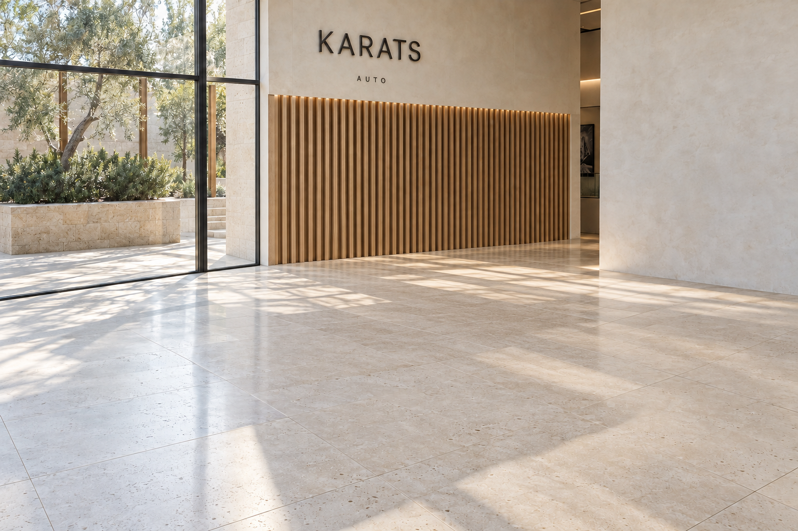
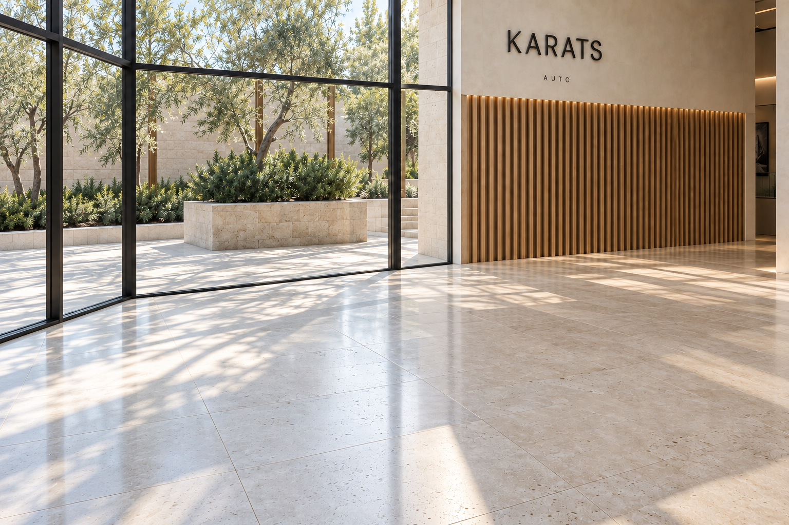
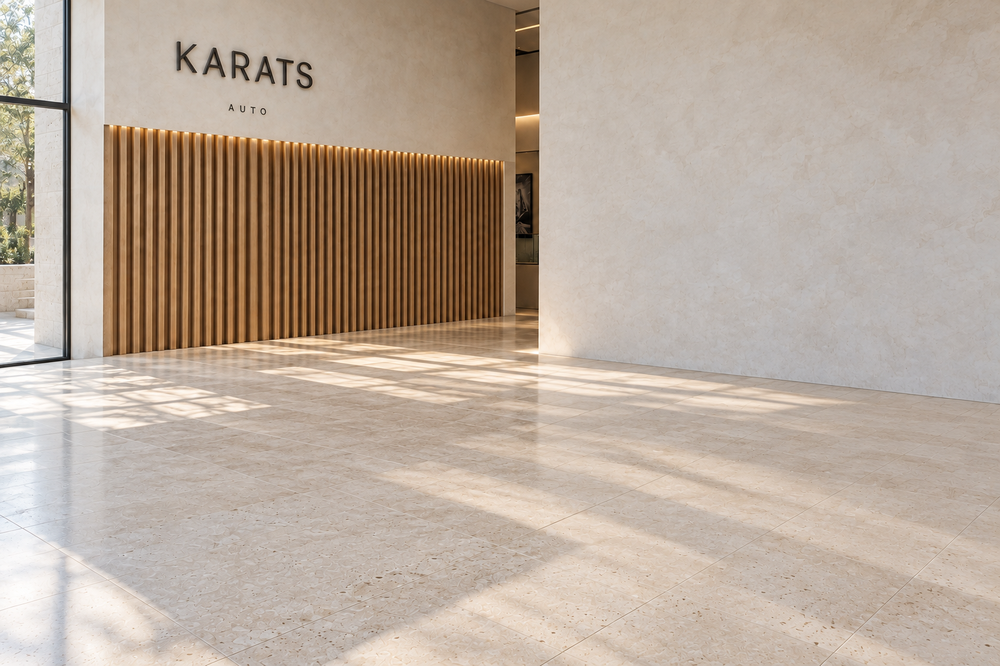
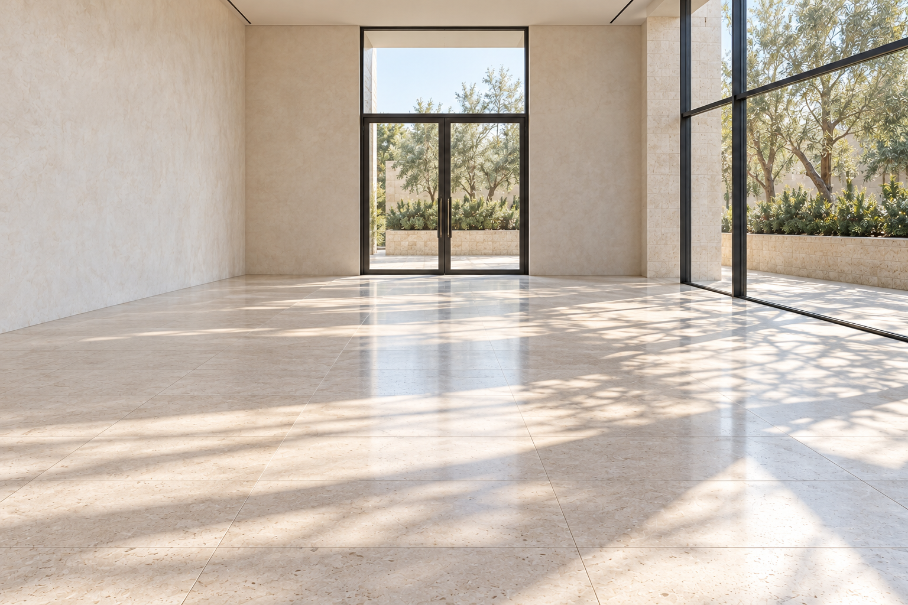

← Все версии KaratsR18 / Рабочие изображения для Marble
Тот же свет.
Пока без автомобилей.
Четыре AI-изображения, не готовая 3D-сцена. 01 сохраняет ракурс эталона; 02–03 исследуют соседние виды; 04 предлагает ранее невидимую сторону.
Первый тест: только 01. В 02 появились отличия остекления и клумбы. Не загружаем все четыре под видом доказанно согласованной съёмки.
Скачать все PNG и промпты одним ZIP
Нативные PNG 1536×1024, без искусственного увеличения. Запрошено high; провайдер вернул low для 01/03 и medium для 02/04. Это не подтверждённый максимальный режим качества.
01 · Главный кадр
Эталон без автомобиля. Основной вход для первого теста Marble.

Скачать исходный PNG
Промпт для повторения / уточнения ракурса
Photorealistic architectural photograph of the same empty KARATS AUTO pavilion as the supplied reference. Preserve warm pale limestone tiles with natural pores and satin reflections, cream mineral plaster, warm vertical oak slats, thin dark window frames, olive courtyard and soft sun with leaf shadows. Same time of day, exposure and material colors. No cars, people, furniture or podiums. No redesign, collage, fisheye or CGI plastic look. Request highest native quality; preserve reference aspect ratio. Keep original camera and architecture unchanged. Remove only the Ferrari, its contact shadow and reflection; restore continuous limestone floor and the lower oak slats. Preserve KARATS AUTO lettering and the narrow opening on the right of the feature wall.
02 · Поворот к остеклению
Дополнительный косой ракурс, не направление Left на 90 градусов. Генератор добавил угловой участок стекла и изменил вид клумбы: не считать точной реконструкцией.

Скачать исходный PNG
Промпт для повторения / уточнения ракурса
Photorealistic architectural photograph of the same empty KARATS AUTO pavilion as the supplied reference. Preserve warm pale limestone tiles with natural pores and satin reflections, cream mineral plaster, warm vertical oak slats, thin dark window frames, olive courtyard and soft sun with leaf shadows. Same time of day, exposure and material colors. No cars, people, furniture or podiums. No redesign, collage, fisheye or CGI plastic look. Request highest native quality; preserve reference aspect ratio. Use the empty master as reference. From approximately the same camera position turn about 25 degrees left toward the garden glazing. Keep the oak feature wall on the right with overlap. Preserve window geometry, planter and floor grid; do not introduce a glass corner or duplicate walls.
03 · Поворот к штукатурной стене
Перекрывается с главным кадром. Фактура пола и пропорции могут отличаться; требует проверки стыковки в Marble.

Скачать исходный PNG
Промпт для повторения / уточнения ракурса
Photorealistic architectural photograph of the same empty KARATS AUTO pavilion as the supplied reference. Preserve warm pale limestone tiles with natural pores and satin reflections, cream mineral plaster, warm vertical oak slats, thin dark window frames, olive courtyard and soft sun with leaf shadows. Same time of day, exposure and material colors. No cars, people, furniture or podiums. No redesign, collage, fisheye or CGI plastic look. Request highest native quality; preserve reference aspect ratio. Use the empty master as reference. From approximately the same camera position turn about 25 degrees right. Keep the oak feature wall left, the same narrow opening beside it, broad uninterrupted cream plaster on the right. Daylight enters from off-frame left. Preserve tile size and grain.
04 · Обратная сторона, предложение
Новая невидимая в эталоне архитектура, ещё не согласована. Стекло справа, штукатурка слева, вход впереди. Не загружать в первый тест.

Скачать исходный PNG
Промпт для повторения / уточнения ракурса
Photorealistic architectural photograph of the same empty KARATS AUTO pavilion as the supplied reference. Preserve warm pale limestone tiles with natural pores and satin reflections, cream mineral plaster, warm vertical oak slats, thin dark window frames, olive courtyard and soft sun with leaf shadows. Same time of day, exposure and material colors. No cars, people, furniture or podiums. No redesign, collage, fisheye or CGI plastic look. Request highest native quality; preserve reference aspect ratio. Propose the unseen reverse side of this single room. Rotate camera 180 degrees: original oak feature wall behind camera, garden glazing on right, cream plaster on left. Opposite end has one tall dark-framed glazed double entrance door. Simple flat plaster ceiling. No second KARATS sign. Same floor and daylight, now entering from right.
Что загружать в Marble
- Create → изображение: загрузить 01-master.png, не коллаж.
- Ниже описание пространства для текстового поля, если оно доступно в выбранном режиме.
- Сначала проверить стены, окна, пол и обратную сторону. Только после этого делать проход.
Create one coherent empty premium automotive pavilion from the supplied reference. Preserve its photographic material quality and visible architecture, not a stylized reinterpretation. Warm pale limestone floor with natural pores and subtle satin reflections; cream mineral-plaster walls; one warm oak vertical-slat feature wall with restrained lighting and KARATS AUTO lettering; tall thin dark-framed glazing opening onto an olive courtyard with pale stone planters. Keep the narrow opening beside the feature wall. Maintain consistent daylight, gentle leaf shadows and straight architectural lines. One connected open-plan room with unobstructed circulation. No cars, people, furniture, display platforms, extra logos or added rooms. Keep the appearance and proportions of the supplied view. Complete unseen areas conservatively. Do not introduce mirror floors, oversized columns, decorative arches, curved glazing or a different architectural style.
Движение камеры
Studio → Record: первый ключ в ракурсе эталона, следующий после короткого бокового перемещения с удержанием дубовой стены в кадре, затем остановка. Высоту и угол обзора сохраняем. Это ключевые кадры в интерфейсе, не текстовая команда генератору.
Не закрывать страницу до скачивания: документация предупреждает, что траектория и улучшенное видео не сохраняются при уходе.
Доступ и стоимость
На текущей странице тарифов: Free включает multi-image; Standard $20/мес. включает экспорт; Pro $35/мес. добавляет коммерческие права. Старый раздел справки относит multi-image к Standard, поэтому окончательный доступ проверяется в аккаунте. Покупок и генерации мира Marble не было.
Тарифы Marble · Правила нескольких изображений